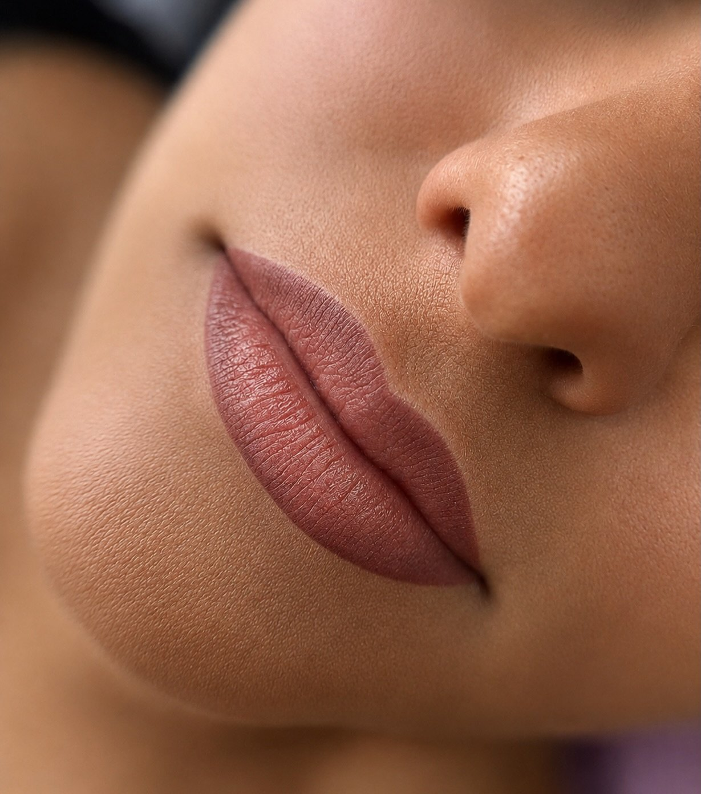
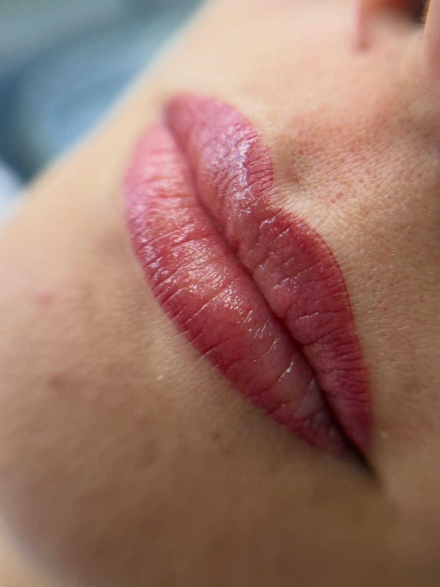
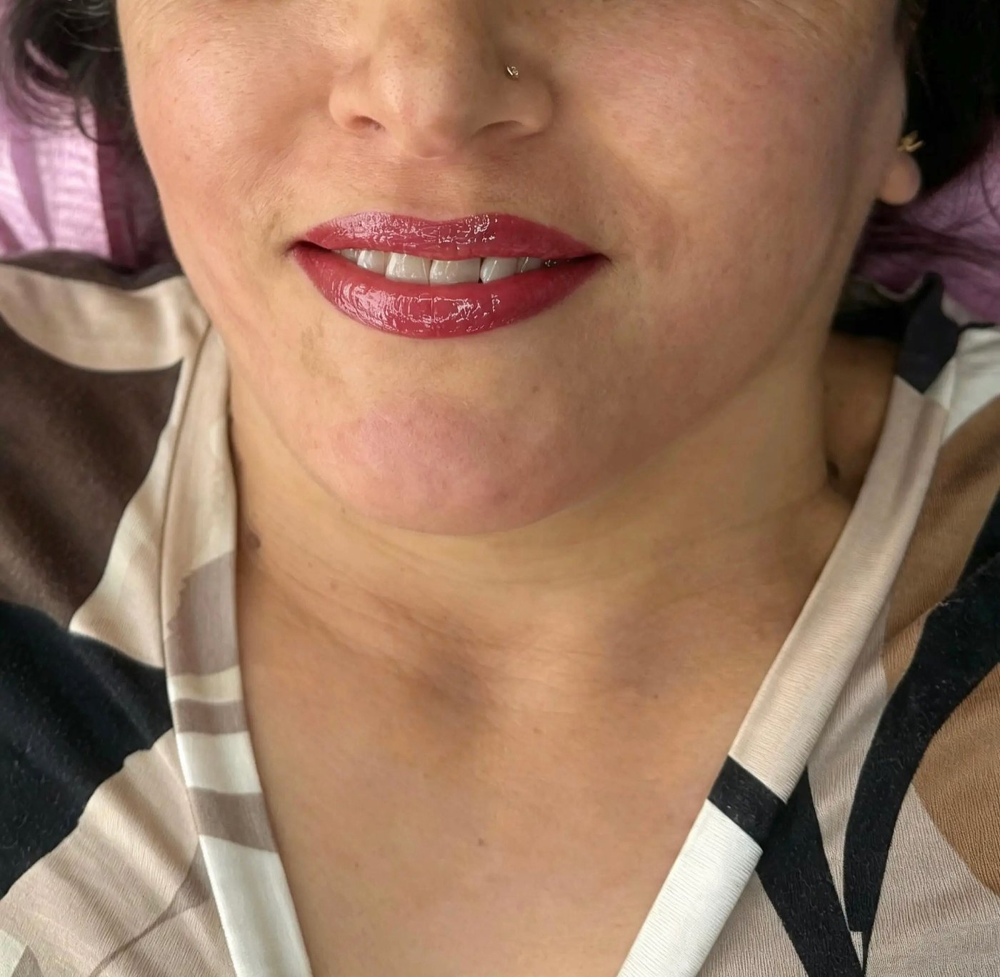
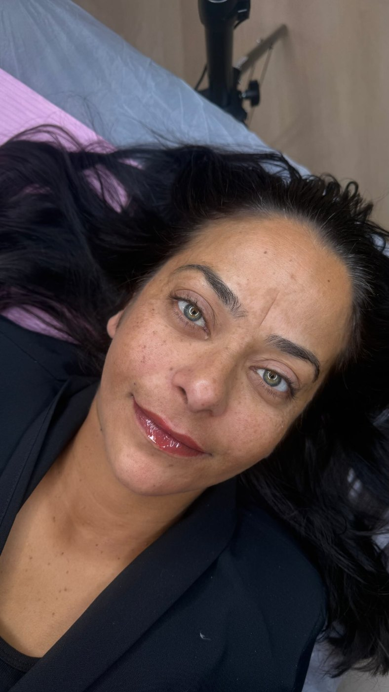

Openingstijden laden
Fine PMU
Lipblush in Duiven. Je eigen lippen, alleen dan uitgerust wakker.
Vijf sterren, op Google en in de eigen agenda.
Tweeënhalf uur de tijd, en de tweede behandeling zit erbij in.
De spanning zit hem in het niet weten
Permanente make-up is spannend, want het gaat over je gezicht. Daarom staat hier precies wat er gebeurt, stap voor stap, met bij elke stap wat klanten er zelf over schreven.
-
1
Eerst uitleg, dan pas iets anders
Voordat er iets gebeurt wordt uitgelegd wat er gaat komen, hoe het voelt en hoe lang het duurt.
“Eerst uitgebreid uitleg gehad.”Klantbeoordeling
-
2
Samen de kleur kiezen
De tint wordt op jouw huid en jouw wensen afgestemd. Je kiest niet uit een boekje, er wordt meegedacht.
“Er werd goed geluisterd naar mijn wensen en meegedacht over welke kleur het beste bij mij zou passen.”Gul
-
3
Meten en uittekenen
De vorm wordt eerst getekend en je kijkt mee. Pas als jij het goed vindt, begint de behandeling.
“Rustig aan beginnen met meten, uittekenen, om vervolgens te beginnen met de behandeling.”Klantbeoordeling
-
4
De behandeling zelf
Er wordt tussendoor gevraagd hoe het met je gaat. Er is tweeënhalf uur ingepland, dus er hoeft niets snel.
“Alles verloopt rustig en zorgvuldig, zonder dat het gehaast aanvoelt.”Sultan
-
5
Na zes tot acht weken de tweede behandeling
Die zit bij de prijs in. Dan wordt bijgewerkt wat tijdens het genezen is weggetrokken, en pas dan is het af.
“Ik ben er super tevreden over en kom terug voor een touch up.”Meryem
Werk uit de studio
Geen stockfoto's en geen filters. Dit zijn klanten van Fine PMU, gefotografeerd in de behandelkamer aan de Stenograaf.



Meer werk, ook video's van het genezen, staat op @fine_pmu.
Wat het kost, zonder sterretjes
Bij permanente make-up hoor je vaak pas achteraf wat de tweede behandeling kost. Hier niet.
Lipblush, ombré lips of full lips
€250
Tweeënhalf uur ingepland
- De tweede behandeling na zes tot acht weken zit erbij in
- De kleur wordt vooraf samen met jou gekozen
- De vorm wordt eerst getekend, jij kijkt mee voordat er iets vast ligt
- Beauty marker, maximaal drie30 minuten €80
- Nabehandeling binnen een jaarAnderhalf uur, voor bestaande klanten €100
- Nabehandeling binnen twee jaarAnderhalf uur, voor bestaande klanten €150
Twijfel je of het bij je past? Stuur een bericht met een foto van je lippen, dan hoor je eerlijk wat er mogelijk is.
Wat klanten schrijven
Vijf sterren, en steeds over hetzelfde: rust, uitleg en hygiëne.
“Er werd zeer zorgvuldig en professioneel gewerkt, met veel aandacht voor detail en hygiëne.”
Meryem“Wat ben ik blij met mijn nieuwe lippen. Een fijne ervaring van begin tot eind.”
Dilek“Er wordt echt de tijd genomen en er is veel aandacht voor detail. Zeker een aanrader.”
SultanKies zelf een moment
De agenda hiernaast is de echte agenda van Fine PMU. Je ziet meteen wat vrij is en boekt zonder te bellen.
| Maandag | Gesloten |
|---|---|
| Dinsdag | Gesloten |
| Woensdag | Gesloten |
| Donderdag | 13:00 tot 16:30 |
| Vrijdag | 09:00 tot 17:00 |
| Zaterdag | 09:00 tot 17:00 |
| Zondag | 09:00 tot 17:00 |
Fine PMU
Stenograaf 1, Franklin Business Center
6921 EX Duiven
info@finepmu.nl